Chapter 17
Introducing JavaFX
Key Skills & Concepts
 Understand JavaFX’s concepts of a stage, a scene, a node, and a scene graph
Understand JavaFX’s concepts of a stage, a scene, a node, and a scene graph Know the JavaFX life-cycle methods
Know the general form of a JavaFX application
Understand how to launch a JavaFX application
Create a Label
Use Button
Handle events
Use CheckBox
Work with ListView
Create a TextField
Add effects
Apply transforms
In the fast-paced world of computing, change is constant, and the art and science of programming continue to evolve and advance. It should not then be surprising that Java’s GUI frameworks have also participated in this process. Recall that Java’s original GUI framework was the AWT. It was soon followed by Swing, which offered a far superior approach. Although Swing has been very successful, it can be difficult to create the “visual sparkle” that many of today’s applications demand. Furthermore, the conceptual basis that underpins the design of GUI frameworks has advanced. To better handle the demands of the modern GUI and advances in GUI design, a new approach was needed. The result is JavaFX, Java’s next-generation GUI framework. This chapter provides an introduction to this powerful new system.
It is important to mention that the development of JavaFX occurred in two main phases. The original JavaFX was based on a scripting language called JavaFX Script. However, JavaFX Script has been discontinued. Beginning with the release of JavaFX 2.0, JavaFX has been programmed in Java itself and provides a comprehensive API. JavaFX has been bundled with Java since JDK 7, update 4. The latest version of JavaFX is JavaFX 8, which is included with JDK 8. (The version number is 8 to align with the JDK version. Thus, the numbers 3 through 7 were skipped.) Because, at the time of this writing, JavaFX 8 represents the latest version of JavaFX, it is the version of JavaFX discussed here. Furthermore, when the term JavaFX is used, it refers to JavaFX 8.
Before we begin, it is useful to answer one question that naturally arises relating to JavaFX: Is JavaFX designed as a replacement for Swing? The answer is, essentially, Yes. However, Swing will be part of Java programming for some time to come. The reason is that there is a large amount of Swing legacy code. Furthermore, there are legions of programmers who know how to program for Swing. Nevertheless, JavaFX has clearly been positioned as the platform of the future. It is expected that over the next few years, JavaFX will supplant Swing for new projects, and many Swing-based applications will migrate to JavaFX. Simply put: JavaFX is something that no Java programmer can afford to ignore.
NOTE
This chapter assumes that you have an understanding of GUI basics, including event handling, as introduced in Chapters 15 and 16.
JavaFX Basic Concepts
Before you can create a JavaFX application, there are several key concepts and features you must understand. Although JavaFX has similarities with Java’s other GUIs, the AWT and Swing, it has substantial differences. For example, like Swing, JavaFX components are lightweight and events are handled in an easy-to-manage, straightforward manner. However, the overall organization of JavaFX and the relationship of its main components differ significantly from either Swing or the AWT. Therefore, a careful reading of the following sections is recommended.
The JavaFX Packages
The JavaFX framework is contained in packages that begin with the javafx prefix. At the time of this writing, there are more than 30 JavaFX packages in its API library. Here are four examples: javafx.application, javafx.stage, javafx.scene, and javafx.scene.layout. Although we will only use a few JavaFX packages in this chapter, you will want to spend some time browsing their capabilities. JavaFX offers a wide array of functionality.
The Stage and Scene Classes
The central metaphor implemented by JavaFX is the stage. As in the case of an actual stage play, a stage contains a scene. Thus, loosely speaking, a stage defines a space and a scene defines what goes in that space. Or, put another way, a stage is a container for scenes and a scene is a container for the items that comprise the scene. As a result, all JavaFX applications have at least one stage and one scene. These elements are encapsulated in the JavaFX API by the Stage and Scene classes. To create a JavaFX application, you will, at minimum, add at least one Scene object to a Stage. Let’s look a bit more closely at these two classes.
Stage is a top-level container. All JavaFX applications automatically have access to one Stage, called the primary stage. The primary stage is supplied by the run-time system when a JavaFX application is started. Although you can create other stages, for many applications, the primary stage will be the only one required.
As mentioned, Scene is a container for the items that comprise the scene. These can consist of controls, such as push buttons and check boxes, text, and graphics. To create a scene, you will add those elements to an instance of Scene.
Nodes and Scene Graphs
The individual elements of a scene are called nodes. For example, a push button control is a node. However, nodes can also consist of groups of nodes. Furthermore, a node can have a child node. In this case, a node with a child is called a parent node or branch node. Nodes without children are terminal nodes and are called leaves. The collection of all nodes in a scene creates what is referred to as a scene graph, which comprises a tree.
There is one special type of node in the scene graph, called the root node. This is the top-level node and is the only node in the scene graph that does not have a parent. Thus, with the exception of the root node, all other nodes have parents, and all nodes either directly or indirectly descend from the root node.
The base class for all nodes is Node. There are several other classes that are, either directly or indirectly, subclasses of Node. These include Parent, Group, Region, and Control, to name a few.
Layouts
JavaFX provides several layout panes that manage the process of placing elements in a scene. For example, the FlowPane class provides a flow layout and the GridPane class supports a row/column grid-based layout. Several other layouts, such as BorderPane (which is similar to the AWT’s BorderLayout), are available. Each inherits Node. The layouts are packaged in javafx.scene.layout.
The Application Class and the Life-cycle Methods
A JavaFX application must be a subclass of the Application class, which is packaged in javafx.application. Thus, your application class will extend Application. The Application class defines three life-cycle methods that your application can override. These are called init( ), start( ), and stop( ), and are shown here, in the order in which they are called:
void init( )
abstract void start(Stage primaryStage)
void stop( )
The init( ) method is called when the application begins execution. It is used to perform various initializations. As will be explained, it cannot, however, be used to create a stage or build a scene. If no initializations are required, this method need not be overridden because an empty, default version is provided.
The start( ) method is called after init( ). This is where your application begins and it can be used to construct and set the scene. Notice that it is passed a reference to a Stage object. This is the stage provided by the run-time system and is the primary stage. Notice that this method is abstract. Thus, it must be overridden by your application.
When your application is terminated, the stop( ) method is called. It is here that you can handle any cleanup or shutdown chores. In cases in which no such actions are needed, an empty, default version is provided.
Launching a JavaFX Application
To start a free-standing JavaFX application, you must call the launch( ) method defined by Application. It has two forms. Here is the one used in this chapter:
public static void launch(String … args)
Here, args is a possibly empty list of strings that typically specify command-line arguments. When called, launch( ) causes the application to be constructed, followed by calls to init( ) and start( ). The launch( ) method will not return until after the application has terminated. This version of launch( ) starts the subclass of Application from which launch( ) is called. The second form of launch( ) lets you specify a class other than the enclosing class to start.
Before moving on, it is necessary to make an important point: JavaFX applications that have been packaged by using the javafxpackager tool (or its equivalent in an IDE) do not need to include a call to launch( ). However, its inclusion often simplifies the test/debug cycle, and it lets you use the program without creating a JAR file. Thus, it is included in the programs in this chapter.
A JavaFX Application Skeleton
All JavaFX applications share the same basic skeleton. Therefore, before looking at any more JavaFX features, it will be useful to see what that skeleton looks like. In addition to showing the general form of a JavaFX application, the skeleton also illustrates how to launch the application and demonstrates when the life-cycle methods are called. A message noting when each life-cycle method is called is displayed on the console. The complete skeleton is shown here:
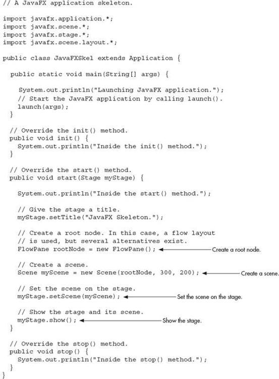
Although the skeleton is quite short, it can be compiled and run. It produces an empty window. However, it also produces the following output on the console:
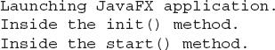
When you close the window, this message is displayed on the console:
Of course, in a real program, the life-cycle methods would not normally output anything to System.out. They do so here simply to illustrate when each method is called. Furthermore, as explained earlier, you will need to override the init( ) and stop( ) methods only if your application must perform special startup or shutdown actions. Otherwise, you can use the default implementations of these methods provided by the Application class.
Let’s examine this program in detail. It begins by importing four packages. The first is javafx.application, which contains the Application class. The Scene class is packaged in javafx.scene, and Stage is packaged in javafx.stage. The javafx.scene.layout package provides several layout panes. The one used by the program is FlowPane.
Next, the application class JavaFXSkel is created. Notice that it extends Application. As explained, Application is the class from which all JavaFX applications are derived. JavaFXSkel contains four methods. The first is main( ). It is used to launch the application via a call to launch( ). Notice that the args parameter to main( ) is passed to the launch( ) method. Although this is a common approach, you can pass a different set of parameters to launch( ), or none at all. One other point: launch( ) is required by a free-standing application, but not in other cases. When it is not needed, main( ) is also not needed. However, for reasons already explained, both main( ) and launch( ) are included in the programs in this chapter.
When the application begins, the init( ) method is called first by the JavaFX run-time system. For the sake of illustration, it simply displays a message on System.out, but it would normally be used to initialize some aspect of the application. Of course, if no initialization is required, it is not necessary to override init( ) because an empty, default implementation is provided. It is important to emphasize that init( ) cannot be used to create the stage or scene portions of a GUI. Rather, these items should be constructed and displayed by the start( ) method.
After init( ) finishes, the start( ) method executes. It is here that the initial scene is created and set to the primary stage. Let’s look at this method line-by-line. First, notice that start( ) has a parameter of type Stage. When start( ) is called, this parameter will receive a reference to the primary stage of the application. It is to this stage that you will set a scene for the application.
After displaying a message on the console that start( ) has begun execution, it sets the title of the stage using this call to setTitle( ):
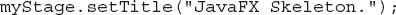
Although this step is not necessarily required, it is customary for stand-alone applications. This title becomes the name of the main application window.
Next, a root node for a scene is created. The root node is the only node in a scene graph that does not have a parent. In this case, a FlowPane is used for the root node, but there are several other classes that can be used for the root.
As mentioned, a FlowPane uses a flow layout. This is a layout in which elements are positioned line-by-line, with lines wrapping as needed. (Thus, it works much like the FlowLayout class used by the AWT and Swing.) In this case, a horizontal flow is used, but it is possible to specify a vertical flow. Although not needed by this skeletal application, it is also possible to specify other layout properties, such as a vertical and horizontal gap between elements, and an alignment.
The following line uses the root node to construct a Scene:
Scene provides several versions of its constructor. The one used here creates a scene that has the specified root with the specified width and height. It is shown here:
Scene(Parent rootnode, double width, double height)
Notice that the type of rootnode is Parent. It is a subclass of Node and encapsulates nodes that can have children. Also notice that the width and the height are double values. This lets you pass fractional values, if needed. In the skeleton, the root is rootNode, the width is 300, and the height is 200.
The next line in the program sets myScene as the scene for myStage:
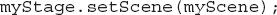
Here, setScene( ) is a method defined by Stage that sets the scene to that specified by its argument.
In cases in which you don’t make further use of the scene, you can combine the previous two steps, as shown here:
Because of its compactness, this form will be used by most of the subsequent examples.
The last line in start( ) displays the stage and its scene:
In essence, show( ) shows the window that was created by the stage and scene.
When you close the application, its window is removed from the screen and the stop( ) method is called by the JavaFX run-time system. In this case, stop( ) simply displays a message on the console, illustrating when it is called. However, stop( ) would not normally display anything. Furthermore, if your application does not need to handle any shutdown actions, there is no reason to override stop( ) because an empty, default implementation is provided.
Compiling and Running a JavaFX Program
One important advantage of JavaFX is that the same program can be run in a variety of different execution environments. For example, you can run a JavaFX program as a stand-alone desktop application, inside a web browser, or as a Web Start application. However, different ancillary files may be needed in some cases, such as an HTML file or a Java Network Launch Protocol (JNLP) file.
In general, a JavaFX program is compiled like any other Java program. However, depending on the target execution environment, some additional steps may be required. For this reason, often the easiest way to compile a JavaFX application is to use an Integrated Development Environment (IDE) that fully supports JavaFX programming. If you just want to compile and test the JavaFX applications shown in this chapter, you can easily do so using the command-line tools. Just compile and run the application in the normal way, using javac and java. This creates a stand-alone application that runs on the desktop.
The Application Thread
In the preceding discussion, it was mentioned that you cannot use the init( ) method to construct a stage or scene. You also cannot create these items inside the application’s constructor. The reason is that a stage or scene must be constructed on the application thread. However, the application’s constructor and the init( ) method are called on the main thread, also called the launcher thread. Thus, they can’t be used to construct a stage or scene. Instead, you must use the start( ) method, as the skeleton demonstrates, to create the initial GUI because start( ) is called on the application thread.
Furthermore, any changes to the GUI currently displayed must be made from the application thread. Fortunately, in JavaFX, events are sent to your program on the application thread. Therefore, event handlers can be used to interact with the GUI. The stop( ) method is also called on the application thread.
A Simple JavaFX Control: Label
The primary ingredient in most user interfaces is the control because a control enables the user to interact with the application. As you would expect, JavaFX supplies a rich assortment of controls. The simplest control is the label because it just displays a message or an image. Although quite easy to use, the label is a good way to introduce the techniques needed to begin building a scene graph.
The JavaFX label is an instance of the Label class, which is packaged in javafx.scene.control. Label inherits Labeled and Control, among other classes. The Labeled class defines several features that are common to all labeled elements (that is, those that can contain text), and Control defines features related to all controls.
The Label constructor that we will use is shown here:
Label(String str)
The string that is displayed is specified by str.
Once you have created a label (or any other control) it must be added to the scene’s content, which means adding it to the scene graph. To do this, you will first call getChildren( ) on the root node of the scene graph. It returns a list of the child nodes in the form of an ObservableList<Node>. ObservableList is packaged in javafx.collections, and it inherits java.util.List, which is part of Java’s Collections Framework. List defines a collection that represents a list of objects. Although a discussion of List and the Collections Framework is beyond the scope of this book, it is easy to use ObservableList to add child nodes. Simply call add( ) on the list of child nodes returned by getChildren( ), passing in a reference to the node to add, which in this case is a label.
The following program puts the preceding discussion into action by creating a simple JavaFX application that displays a label:
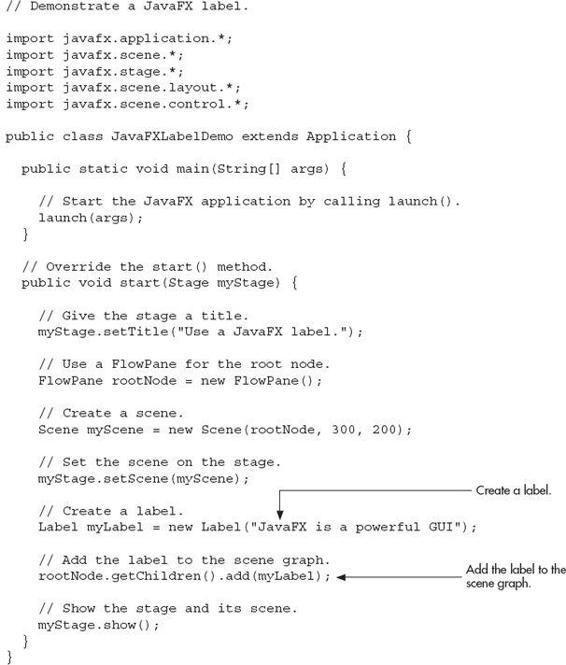
Ask the Expert
Q: You have explained how to add a node to the scene graph. Is there a way to remove one?
A: Yes, to remove a control from the scene graph, call remove( ) on the ObservableList. For example,
removes myLabel from the scene. In general, ObservableList supports a wide range of list-management methods. Here are two examples. You can determine if the list is empty by calling isEmpty( ). You can obtain the number of nodes in the list by calling size( ). You will want to explore ObservableList on your own as you advance in your study of JavaFX.
This program produces the following window:
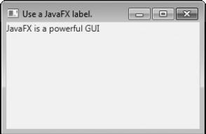
In the program, pay special attention to this line:
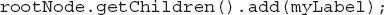
It adds the label to the list of children for which rootNode is the parent. Although this line could be separated into its individual pieces if necessary, you will often see it as shown here.
Before moving on, it is useful to point out that ObservableList provides a method called addAll( ) that can be used to add two or more children to the scene graph in a single call. You will see an example of this shortly.
Using Buttons and Events
Although the program in the preceding section presents a simple example of using a JavaFX control and constructing a scene graph, it does not show how to handle events. Event handling is important because most GUI controls generate events that are handled by your program. For example, buttons, check boxes, and lists all generate events when they are used. In many ways, event handling in JavaFX is similar to event handling in Swing as shown in the preceding chapter, but it’s more streamlined. One commonly used control is the button. This makes button events one of the most frequently handled. Therefore, a button is a good way to introduce event handling in JavaFX. For this reason, the fundamentals of event handling and the button are described together.
Event Basics
The base class for JavaFX events is the Event class, which is packaged in javafx.event. Event inherits java.util.EventObject, which means that JavaFX events share the same basic functionality as other Java events. Several subclasses of Event are defined. The one that we will use here is ActionEvent. It encapsulates action events generated by a button.
In general, JavaFX uses what is, in essence, the delegation event model approach to event handling. To handle an event, you must first register the handler that acts as a listener for the event. When the event occurs, the listener is called. It must then respond to the event and return. In this regard, JavaFX events are managed much like Swing events.
Events are handled by implementing the EventHandler interface, which is also in javafx.event. It is a generic interface with the following form:
Interface EventHandler<T extends Event>
Here, T specifies the type of event that the handler will handle. It defines one method, called handle( ), which receives the event object as a parameter. It is shown here:
void handle(T eventObj)
In this case, eventObj is the event that was generated. Typically, event handlers are implemented through anonymous inner classes or lambda expressions, but you can use stand-alone classes for this purpose if it is more appropriate to your application (for example, if one event handler will handle events from more than one source).
Introducing the Button Control
In JavaFX, the push button control is provided by the Button class, which is in javafx.scene.control. Button inherits a fairly long list of base classes that include ButtonBase, Labeled, Region, Control, Parent, and Node. If you examine the API documentation for Button, you will see that much of its functionality comes from its base classes. Furthermore, it supports a wide array of options. However, here we will use its default form. Buttons can contain text, graphics, or both. In this example, we will use text-based buttons.
The Button constructor we will use is shown here:
Button(String str)
In this case, str is the message that is displayed in the button.
When a button is pressed, an ActionEvent is generated. ActionEvent is packaged in javafx.event. You can register a listener for this event by calling setOnAction( ) on the button. It has this general form:
final void setOnAction(EventHandler<ActionEvent> handler)
Here, handler is the handler being registered. As mentioned, often you will use an anonymous inner class or lambda expression for the handler. The setOnAction( ) method sets the property onAction, which stores a reference to the handler. As with all other Java event handling, your handler must respond to the event as fast as possible and then return. If your handler consumes too much time, it will noticeably slow down the application. For lengthy operations, you must use a separate thread of execution.
Demonstrating Event Handling and the Button
The following program demonstrates event handling and the Button control. It uses two buttons and a label. The buttons are called Up and Down. Each time a button is pressed, the content of the label is set to display which button was pressed. Thus, it functions similarly to the JButton example in the preceding chapter. You might find it interesting to compare the code for each.
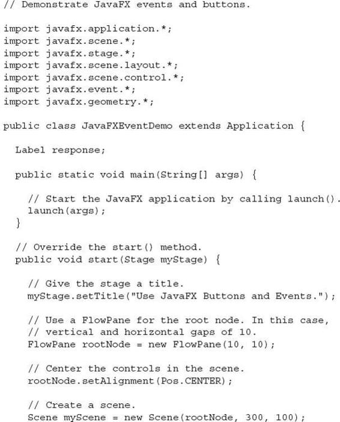
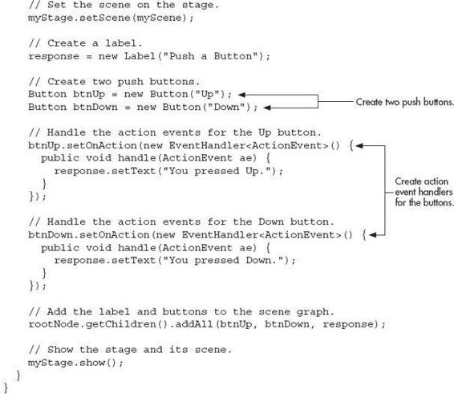
Sample output from this program is shown here:
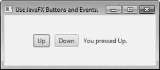
Let’s examine a few key portions of this program. First, notice how buttons are created by these two lines:
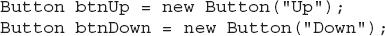
This creates two text-based buttons. The first displays the string Up; the second displays Down.
Next, an action event handler is set for each of these buttons. The sequence for the Up button is shown here:
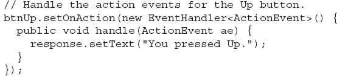
As explained, buttons respond to events of type ActionEvent. To register a handler for these events, the setOnAction( ) method is called on the button. It uses an anonymous inner class to implement the EventHandler interface. (Recall that EventHandler defines only the handle( ) method.) Inside handle( ), the text in the response label is set to reflect the fact that the Up button was pressed. Notice that this is done by calling the setText( ) method on the label. Events are handled by the Down button in the same way.
After the event handlers have been set, the response label and the buttons btnUp and btnDown are added to the scene graph by using a call to addAll( ):
The addAll( ) method adds a list of nodes to the invoking parent node. Of course, these nodes could have been added by three separate calls to add( ), but the addAll( ) method is more convenient to use in this situation.
There are two other things of interest in this program that relate to the way the controls are displayed in the window. First, when the root node is created, this statement is used:
Here, the FlowPane constructor is passed two values. These specify the horizontal and vertical gap that will be left around elements in the scene. If these gaps are not specified, then two elements (such as two buttons) would be positioned in such a way that no space was between them. Thus, the controls would run together, creating a very unappealing user interface. Specifying gaps prevents this.
The second point of interest is the following line, which sets the alignment of the elements in the FlowPane:
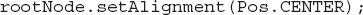
Here, the alignment of the elements is centered. This is done by calling setAlignment( ) on the FlowPane. The value Pos.CENTER specifies that both a vertical and horizontal center will be used. Other alignments are possible. Pos is an enumeration that specifies alignment constants. It is packaged in javafx.geometry.
Before moving on, one more point needs to be made. The preceding program used anonymous inner classes to handle button events. However, because the EventHandler interface defines only one abstract method, handle( ), a lambda expression could have passed to setOnAction( ), instead. For example, here is the handler for the Up button, rewritten to use a lambda:
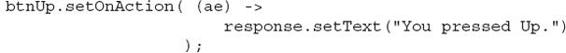
Notice that the lambda expression is more compact than the anonymous inner class. (You will use lambda expressions when you modify this example as part of exercise 10 in the Self Test.)
Three More JavaFX Controls
JavaFX defines a rich set of controls, which are packaged in javafx.scene.control. You have already seen two of them: Label and Button. Here, we will look at three more: CheckBox, ListView, and TextField. As their names imply, they support a check box, a list control, and a text field. Combined, these provide a representative sampling of the JavaFX controls. They also help demonstrate several common techniques. Once you understand the basics, you will be able to explore the other controls on your own.
The controls described here provide functionality similar to that of the Swing controls presented by the preceding Swing chapter. As you work through this section, you might find it interesting to compare the way these controls are implemented by the two frameworks.
CheckBox
In JavaFX, the check box is encapsulated by the CheckBox class. Its immediate superclass is ButtonBase. Thus it is a special type of button. Although you are no doubt familiar with check boxes because they are widely used controls, the JavaFX check box is a bit more sophisticated than you may at first think. This is because CheckBox supports three states. The first two are checked or unchecked, as you would expect, and this is the default behavior. The third state is indeterminate (also called undefined). This state is typically used to indicate that the state of the check box has not been set or that it is not relevant to a specific situation. To use the indeterminate state, you will need to explicitly enable it. This procedure is demonstrated in Try This 17-1. Here, we will examine the CheckBox’s traditional operation.
Here is the CheckBox constructor that we will use:
CheckBox(String str)
It creates a check box that has the text specified by str as a label. As with other buttons, a CheckBox generates an action event when it is selected.
The following program demonstrates check boxes. It displays four check boxes that represent different types of computers. They are labeled Smartphone, Tablet, Notebook, and Desktop. Each time a check-box state changes, an action event is generated. It is handled by displaying the new state (selected or cleared) and by displaying a list of all selected boxes.
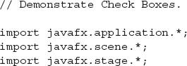
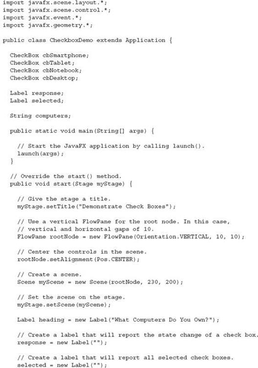
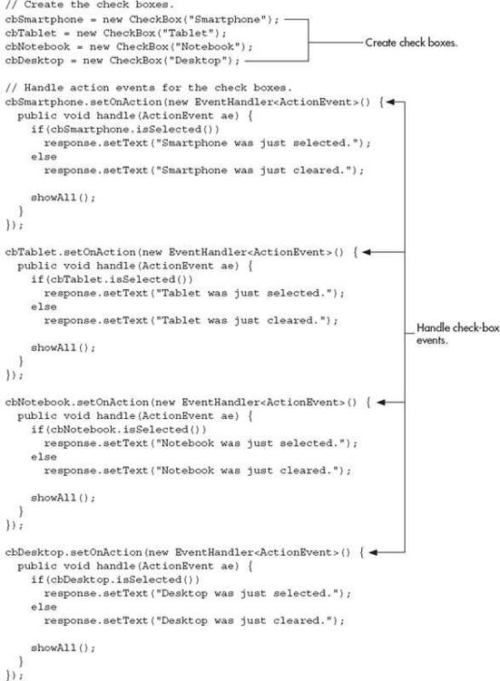
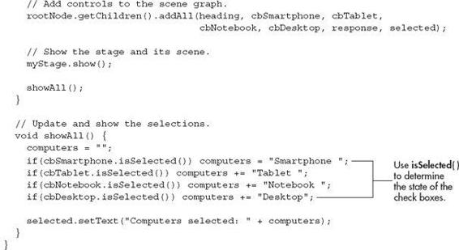
Sample output is shown here:
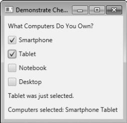
The operation of this program is straightforward. Each time a check box is changed, an ActionEvent is generated. The handlers for these events first report whether the check box was selected or cleared. To do this, they call the isSelected( ) method on the event source. It returns true if the check box was just selected, and false if it was just cleared. Next, the showAll( ) method is called, which displays all selected check boxes.
There is one other point of interest in the program. Notice that it uses a vertical flow pane for the layout, as shown here:
By default, FlowPane flows horizontally. A vertical flow is created by passing the value Orientation.VERTICAL as the first argument to the FlowPane constructor.
| Try This 17-1 |
Use the CheckBox Indeterminate State |
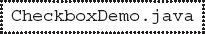
As explained, by default, CheckBox implements two states: checked and unchecked. However, CheckBox also supports a third, indeterminate state, which can be used to indicate that the state of the box has not yet been set or that an option is not applicable to a situation. The indeterminate state for a check box must be explicitly enabled. It is not provided by default. Also, the event handler for the check box must also handle the indeterminate state. The project illustrates the process. It does so by adding support for the indeterminate state to the Smartphone check box in CheckboxDemo program, just shown.
1. To enable the indeterminate state in a check box, call setAllowIndeterminate( ), shown here:
final void setAllowIndeterminate(boolean enable)
If enable is true, the indeterminate state is enabled. Otherwise, it is disabled. When the indeterminate state is enabled, the user can select between checked, unchecked, and indeterminate. Therefore, to enable the indeterminate state on the Smartphone check box, add this line:
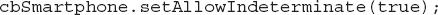
2. To determine if a check box is in the indeterminate state, call isIndeterminate( ), shown here:
final boolean isIndeterminate( )
It returns true if the check box state is indeterminate and false otherwise. The event handler for the check box will need to test for the indeterminate state. To do so, add it to the Smartphone event handler, as shown here:
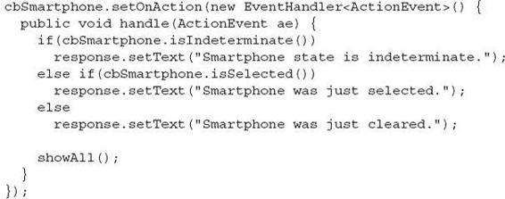
3. After making these changes, compile and run the program. Now, you can set the state of the Smartphone check box to indeterminate, as shown here:
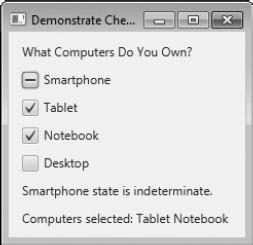
ListView
Another commonly used control is the list view, which in JavaFX is encapsulated by ListView. A ListView can display a list of entries from which you can select one or more. One very useful feature of ListView is that scrollbars are automatically added when the number of items in the list exceeds the number that can be displayed within the control’s dimensions. Because of its ability to make efficient use of limited screen space, ListView is a popular alternative to other types of selection controls.
ListView is a generic class that is declared like this:
class ListView<T>
Here, T specifies the type of entries stored in the list view. Often, these are entries of type String, but other types are also allowed.
Here is the ListView constructor that we will use:
ListView(ObservableList<T> list)
The list of items to be displayed is specified by list. It is an object of type ObservableList. As explained earlier, ObservableList supports a list of objects. By default, a ListView allows only one item in the list to be selected at any one time. You can allow multiple selections by changing the selection mode, but we will use the default, single-selection mode.
Probably the easiest way to create an ObservableList for use in a ListView is to use the factory method observableArrayList( ), which is a static method defined by the FXCollections class (which is packaged in javafx.collections). The version we will use is shown here:
static <E> ObservableList<E> observableArrayList(E … elements)
In this case, E specifies the type of elements, which are passed via elements.
Although ListView provides a default size, sometimes you will want to set the preferred height and/or width to best match your needs. One way to do this is to call the setPrefHeight( ) and setPrefWidth( ) methods, shown here:
final void setPrefHeight(double height)
final void setPrefWidth(double width)
Alternatively, you can use a single call to set both dimensions at the same time by use of setPrefSize( ), shown here:
void setPrefSize(double width, double height)
There are two basic ways in which you can use a ListView. First, you can ignore events generated by the list and simply obtain the selection in the list when your program needs it. Second, you can monitor the list for changes by registering a change listener. This lets you respond each time the user changes a selection in the list. This is the approach used here.
A change listener is supported by the ChangeListener interface, which is packaged in javafx.beans.value. The ChangeListener interface defines only one method, called changed( ). It is shown here:
void changed(ObservableValue<? extends T> changed, T oldVal, T newVal)
In this case, changed is the instance of ObservableValue<T> which encapsulates an object that can be watched for changes. The oldVal and newVal parameters pass the previous value and the new value, respectively. Thus, in this case, newVal holds a reference to the list item that has just been selected.
To listen for change events, you must first obtain the selection model used by the ListView. This is done by calling getSelectionModel( ) on the list. It is shown here:
final MultipleSelectionModel<T> getSelectionModel( )
It returns a reference to the model. MulitpleSelectionModel is a class that defines the model used for multiple selections, and it inherits SelectionModel. However, multiple selections are allowed in a ListView only if multiple-selection mode is turned on.
Using the model returned by getSelectionModel( ), you will obtain a reference to the selected item property that defines what takes place when an element in the list is selected. This is done by calling selectedItemProperty( ), shown next:
final ReadOnlyObjectProperty<T> selectedItemProperty( )
You will add the change listener to this property by using the addListener( ) method on the returned property. The addListener( ) method is shown here:
void addListener(ChangeListener<? super T> listener)
In this case, T specifies the type of the property.
The following example puts the preceding discussion into action. It creates a list view that displays a list of computer types, allowing the user to select one. When one is chosen, the selection is displayed.
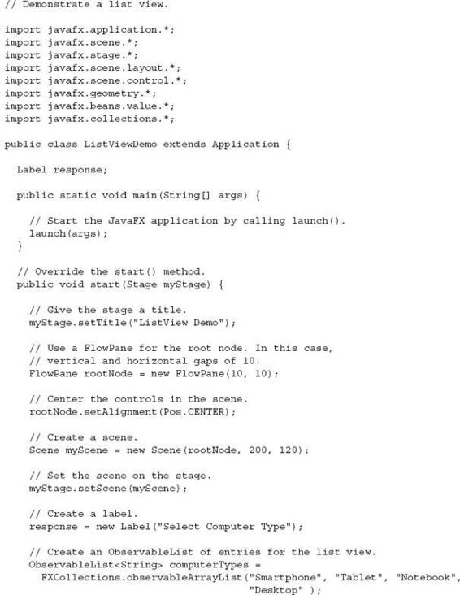
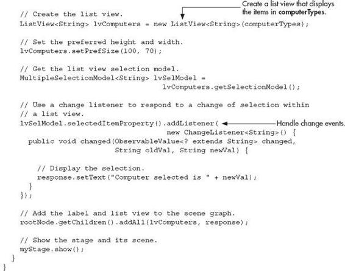
Sample output is shown here.
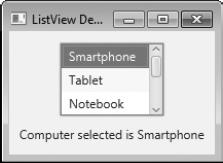
Notice that a vertical scroll bar has been included so that the list can be scrolled to see all of its entries. As mentioned, when the contents of a ListView exceed its size, a scroll bar is automatically added. This makes ListView a very convenient control.
In the program, pay special attention to how the ListView is constructed. First, an ObservableList is created by this line:
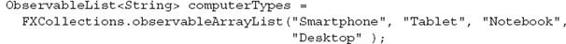
It uses the observableArrayList( ) method to create a list of strings. Then, the ObservableList is used to initialize a ListView, as shown here:
The program then sets the preferred width and height of the control.
Now, notice how the selection model is obtained for lvComputers:
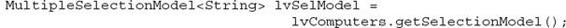
As explained, ListView uses MultipleSelectionModel, even when only a single selection is allowed. The selectedItemProperty( ) method is then called on the model and a change listener is registered, as shown here:
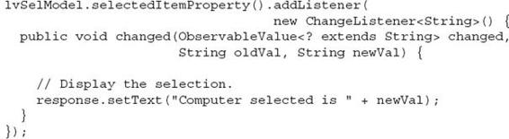
As a point of interest, the same basic mechanism used to listen for and handle change events can be applied to any control that generates change events.
Ask the Expert
Q: How do I enable multiple selections in a ListView?
A: When using a ListView, if you want to allow more than one item to be selected, you must explicitly request it. To do so, you must set the selection mode by calling setSelectionMode( ) on the ListView model. It is shown here:
final void setSelectionMode(SelectionMode mode)
In this case, mode must be either SelectionMode.MULTIPLE or SelectionMode.SINGLE. To enable multiple selections, use SelectionMode.MULTIPLE.
One way to get a list of the selected items is to call getSelectedItems( ) on the selection model. It is shown here:
ObservableList<T> getSelectedItems( )
It returns an ObservableList of the items. You could then cycle through the returned list using a for-each for, for example, to examine the items.
TextField
Controls such as Button, CheckBox, and ListView are, obviously, quite useful, but they all implement a means of selecting a predetermined option or action. Sometimes, however, you will want the user to enter a string of his or her own choosing. To accommodate this type of input, JavaFX includes several text-based controls. The one we will look at is TextField. It allows one line of text to be entered. Thus, it is useful for obtaining names, ID strings, addresses, and the like. Like all JavaFX text controls, TextField inherits TextInputControl, which defines much of its functionality.
TextField defines two constructors. The first is the default constructor, which creates an empty text field that has the default size. The second lets you specify the initial contents of the field. Here, we will use the default constructor.
Although the default size of a TextField is sometimes adequate, often you will want to specify its size. This is done by calling setPrefColumnCount( ), shown here:
final void setPrefColumnCount(int columns)
The columns value is used by TextField to determine its size.
You can set the text in a text field by calling setText( ). You can obtain the current text by calling getText( ). In addition to these fundamental operations, TextField supports several other capabilities that you might want to explore, such as cut, paste, and append. You can also select a portion of the text under program control.
One especially useful TextField option is the ability to set a prompting message inside the text field when the user attempts to use a blank field. To do this, call setPromptText( ), shown here:
final void setPromptText(String str)
In this case, str is the string displayed in the text field when no text has been entered. It is displayed using low-intensity (such as a gray tone).
When the user presses ENTER while inside a TextField, an action event is generated. Although handling this event is often helpful, in some cases, your program will simply obtain the text when it is needed, rather than handling action events. Both approaches are demonstrated by the following program. It creates a text field that requests a name. When the user presses ENTER while the text field has input focus, or presses the Get Name button, the string is obtained and displayed. Notice that a prompting message is also included.
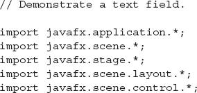
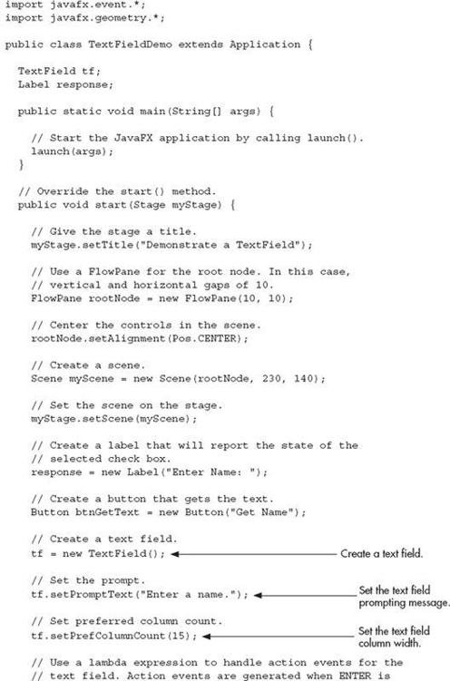
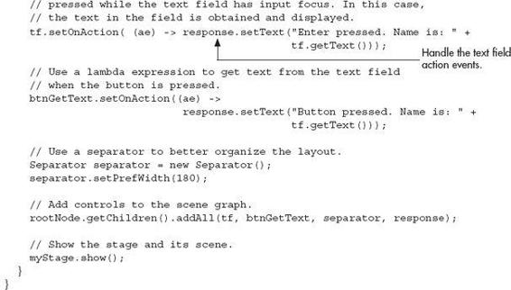
Sample output is shown here:
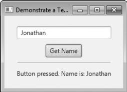
In the program, notice that lambda expressions are used as event handlers. Each handler consists of a single method call. This makes them perfect candidates for lambda expressions.
Ask the Expert
Q: What other text controls does JavaFX support?
A: Other text controls include TextArea, which supports multiline text, and PasswordField, which can be used to input passwords. You might also find HTMLEditor helpful.
Introducing Effects and Transforms
A principal advantage of JavaFX is its ability to alter the precise look of a control (or any node in the scene graph) through the application of an effect and/or a transform. Both effects and transforms help give your GUI the sophisticated, modern look that users have come to expect. As you will see, the ease with which effects and/or transforms can be used in JavaFX is one of its strongest features. Although the topic of effects and transforms is quite large, the following introduction will give you an idea of the benefits they provide.
Effects
Effects are supported by the abstract Effect class and its concrete subclasses, which are packaged in javafx.scene.effect. Using these effects, you can customize the way a node in a scene graph looks. Several built-in effects are provided. Here is a sampling:
| Bloom |
Increases the brightness of the brighter parts of a node. |
| BoxBlur |
Blurs a node. |
| DropShadow |
Displays a shadow that appears behind the node. |
| Glow |
Produces a glowing effect. |
| InnerShadow |
Displays a shadow inside a node. |
| Lighting |
Creates the shadow effects of a light source. |
| Reflection |
Displays a reflection. |
These, and the other effects, are easy to use and are available to any Node, including controls. Of course, depending on the control, some effects will be more appropriate than others.
To set an effect on a node, call setEffect( ), which is defined by Node. It is shown here:
final void setEffect(Effect effect)
In this case, effect is the effect that will be applied. To specify no effect, pass null. Thus, to add an effect to a node, first create an instance of that effect and then pass it to setEffect( ). Once this has been done, the effect will be used whenever the node is rendered (as long as the effect is supported by the environment). To demonstrate the power of effects, we will use two of them: Reflection and BoxBlur. However, the process of adding an effect is essentially the same no matter what effect you choose.
BoxBlur blurs the node on which it is used. It is called BoxBlur because it uses a blurring technique based on adjusting pixels within a rectangular region. The amount of blurring is under your control. To use a blur effect, you must first create a BoxBlur instance. BoxBlur supplies two constructors. Here is the constructor that we will use:
BoxBlur(double width, double height, int iterations)
Here, width and height specify the size of box into which a pixel will be blurred. These values must be between 0 and 255, inclusive. Typically, these values are at the lower end of this range. The number of times that the blur effect is applied is specified by iterations, which must be between 0 and 3, inclusive. A default constructor is also supported, which sets the width and height to 5.0 and the iterations to 1.
After a BoxBlur instance has been created, the width and height of the box can be changed by using setWidth( ) and setHeight( ), shown here:
final void setWidth(double width)
final void setHeight(double height)
The number of iterations can be changed by calling setIterations( ):
final void setIterations(int iterations)
By using these methods, you can change the blur effect during the execution of your program.
Reflection produces an effect that simulates a reflection of the node on which it is called. It is particularly useful on text, such as that contained in a label. Reflection gives you significant control over how the reflection will look. For example, you can set the opacity of both the top and the bottom of the reflection. You can also set the space between the image and its reflection, and the amount reflected. These can set by the following Reflection constructor:
Reflection(double offset, double fraction, double topOpacity, double bottomOpacity)
Here, offset specifies the distance between the bottom of the image and its reflection. The amount of the reflection that is shown is specified as a fraction, specified by fraction. It must be between 0 and 1.0. The top and bottom opacity is specified by topOpacity and bottomOpacity. Both must be between 0 and 1.0. A default constructor is also supplied, which sets the offset to 0, the amount to 0.75, the top opacity to 0.5, and the bottom opacity to 0.
The offset, amount shown, and opacities can also be changed during program execution. For example, the opacities are set using setTopOpacity( ) and setBottomOpacity( ), shown here:
final void setTopOpacity(double opacity)
final void setBottomOpacity(double opacity)
The offset is changed by calling setTopOffset( ):
final void setTopOffset(double offset)
The amount of the reflection displayed can be set by calling setFraction( ):
final void setFraction(double amount)
These methods let you adjust the reflection during program execution.
Transforms
Transforms are supported by the abstract Transform class, which is packaged in javafx.scene.transform. Four of its subclasses are Rotate, Scale, Shear, and Translate. Each does what its name suggests. (Another subclass is Affine, but typically you will use one or more of the preceding transform classes.) It is possible to perform more than one transform on a node. For example, you could rotate and scale it. Transforms are supported by the Node class as described next.
One way to add a transform to a node is to add it to the list of transforms maintained by the node. This list is obtained by calling getTransforms( ), which is defined by Node. It is shown here:
final ObservableList<Transform> getTransforms( )
It returns a reference to the list of transforms. To add a transform, simply add it to this list by calling add( ). You can clear the list by calling clear( ). You can use remove( ) to remove a specific element.
In some cases, you can specify a transform directly by setting one of Node’s properties. For example, you can set the rotation angle of a node, with the pivot point being at the center of the node, by calling setRotate( ), passing in the desired angle. You can set a scale by using setScaleX( ) and setScaleY( ), and you can translate a node by using setTranslateX( ) and setTranslateY( ). (Z axis transforms may also be supported by the platform.) However, using the transforms list offers the greatest flexibility, and that is the approach demonstrated here.
To demonstrate the use of transforms, we will use the Rotate and Scale classes. (The other transforms are used in the same general way.) Rotate rotates a node through a specified angle around a specified point. These values can be set when a Rotate instance is created. For example, here is one Rotate constructor:
Rotate(double angle, double x, double y)
In this case, angle specifies the number of degrees to rotate. The center of rotation, called the pivot point, is specified by x and y.
It is also possible to use the default constructor and set the rotation values after a Rotate object has been created, which is what the demonstration program shown in the next section will do. This is done by using the setAngle( ), setPivotX( ), and setPivotY( ) methods, shown here:
final void setAngle(double angle)
final void setPivotX(double x)
final void setPivotY(double y)
As before, angle specifies the number of degrees to rotate and the center of rotation is specified by x and y. Using these methods, you can rotate a node during program execution. This can create a very dramatic effect.
Scale scales a node as specified by a scale factor. Thus, it changes a node’s size. Scale defines several constructors. Here is the one that we will use:
Scale(double widthFactor, double heightFactor)
In this case, widthFactor specifies the scaling factor applied to the node’s width, and heightFactor specifies the scaling factor applied to the node’s height. These factors can be changed after a Scale instance has been created by using setX( ) and setY( ), shown here:
final void setX(double widthFactor)
final void setY(double heightFactor)
As before, widthFactor specifies the scaling factor applied to the node’s width, and heightFactor specifies the scaling factor applied to the node’s height. You might use these methods to change the size of a control during program execution, possibly to draw attention to it.
Demonstrating Effects and Transforms
The following program demonstrates the use of effects and transforms. It does so by creating three buttons and a label. The buttons are called Rotate, Scale, and Blur. Each time one of these buttons is pressed, the corresponding effect or transform is applied to the button. Specifically, each time you press Rotate, the button is rotated by 15 degrees. Each time you press Scale, the button size is changed. Each time you press Blur, the button is progressively blurred. The label illustrates the reflection effect. When you examine the program, you will see how easy it is to customize the look of your GUI. You might find it interesting to experiment with it, trying different transforms or effects, or trying the effects on different types of nodes other than buttons.
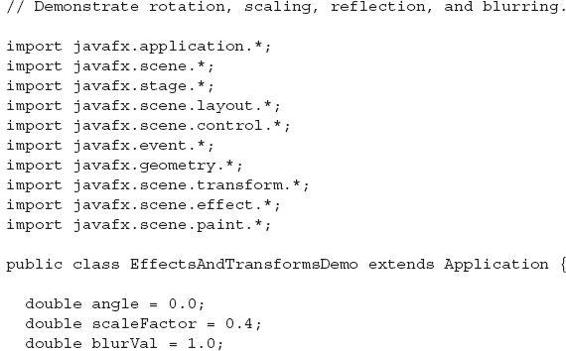
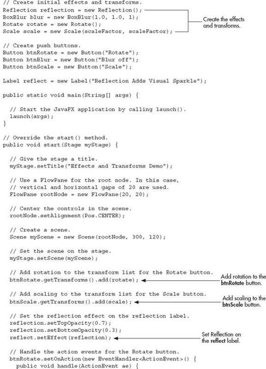
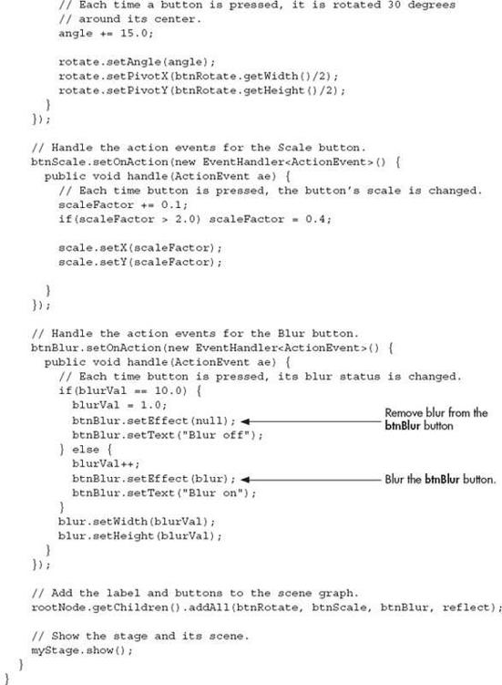
Sample output is shown here:
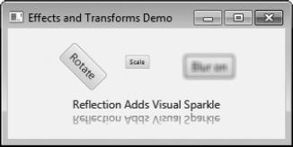
Before leaving the topic of effects and transforms, it is useful to mention that several of them are particularly pleasing when used on a Text node. Text is a class packaged in javafx.scene.text. It creates a node that consists of text. Because it is a node, the text can be easily manipulated as a unit and various effects and transforms can be applied.
What Next?
Congratulations! If you have read and worked through the preceding 17 chapters, then you can call yourself a Java programmer. Of course, there are still many, many things to learn about Java, its libraries, and its subsystems, but you now have a solid foundation upon which you can build your knowledge and expertise.
Here are a few of the topics that you will want to learn more about:
JavaFX and Swing—both are an important part of today’s Java programming environment.
Event handling.
Java’s networking classes.
Java’s utility classes, especially its Collections Framework, which simplifies a number of common programming tasks.
The Concurrent API, which offers detailed control over high-performance multithreaded applications.
Java Beans, which supports the creation of software components in Java.
Native methods.
Servlets. If you will be writing high-powered web applications, then you will want to learn about servlets. Servlets are to the server what applets are to the browser.
To continue your study of Java, I recommend my book Java: The Complete Reference, Ninth Edition (Oracle Press/McGraw-Hill Professional, 2014). In it, you will find comprehensive coverage of the Java language, its key libraries, and many more example programs.
 Chapter 17 Self Test
Chapter 17 Self Test
1. What is the top-level package name of the JavaFX framework?
2. Two concepts central to JavaFX are a stage and a scene. What classes encapsulate them?
3. A scene graph is composed of ________.
4. The base class for all nodes is ________.
5. What class will all JavaFX applications extend?
6. What are the three JavaFX life-cycle methods?
7. In what life-cycle method can you construct an application’s stage?
8. The launch( ) method is called to start a free-standing JavaFX application. True or False?
9. What are the names of the JavaFX classes that support a label and a button?
10. One way to terminate a free-standing JavaFX application is to call Platform.exit( ). Platform is packaged in javafx.Application. When called, exit( ) immediately terminates the program. With this in mind, change the JavaFXEventDemo program shown in this chapter so that it has two buttons called Run and Exit. If Run is pressed, have the program display that choice in a label. If Exit is pressed, have the application terminate. Use lambda expressions for the event handlers.
11. What JavaFX control implements a check box?
12. ListView is a control that displays a directory list of files on the local file system. True or False?
13. Convert the Swing-based file comparison program in Try This 16-1 so it uses JavaFX instead. In the process, make use of another of JavaFX’s features: its ability to fire an action event on a button under program control. This is done by calling fire( ) on the button instance. For example, assuming a Button called myButtton, the following will fire an action event on it: myButton.fire( ). Use this fact when implementing the event handlers for the text fields that hold the names of the files to compare. If the user presses ENTER when in either of these fields, simply fire an action event on the Compare button. The event-handling code for the Compare button will then handle the file comparison.
14. Modify the EffectsAndTransformsDemo program so the Rotate button is also blurred. Use a blur width and height of 5 and an iteration count of 2.
15. On your own, experiment with other effects and transforms. For example, try the Glow effect and the Translate transform.
16. Continue to advance in your knowledge of Java. A good way to start is by examining Java’s core packages, such as java.lang, java.util, and java.net. Write sample programs that demonstrate their various classes and interfaces. In general, the best way to become a great Java programmer is to write lots of code.